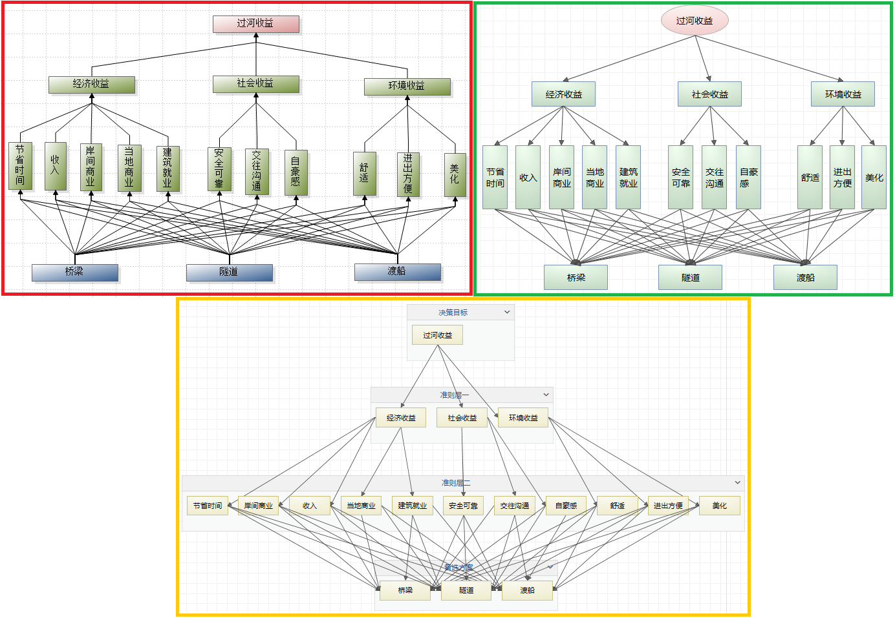
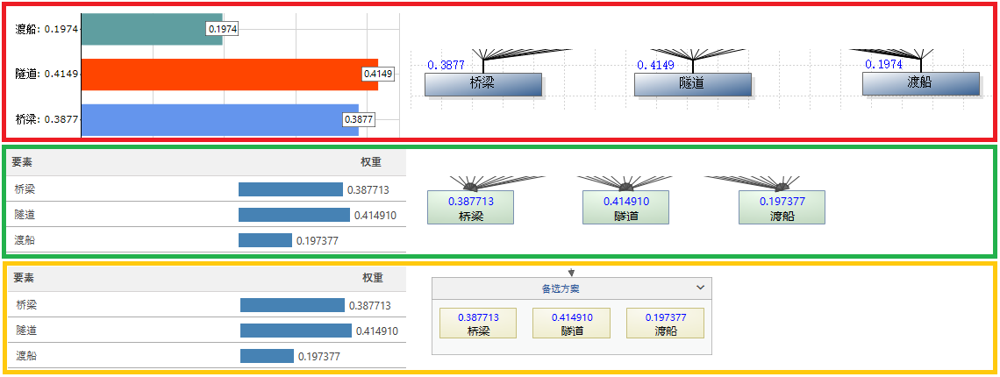

层次分析法模型可以看做是一种特殊的网络模型：每一层对应一个簇，簇内节点对应层次中的每个要素，簇内节点之间没有相互影响，各层之间没有影响关系循环。在yaanp中，层次分析法问题建模时除了可以使用与层次分析法软件yaahp类似的层次模型构建方式外，还可以使用单网络的网络分析法方式构建，两者是等效的。
上图展示了三种过河收益决策模型图，分别为层次分析法软件yaahp中构建的层次模型图(红框内)、yaanp中构建的层次模型图(绿框内)和yaanp中单网络ANP模型方式构建的层次模型图(黄框内)。 上图中下方的网络模型图与其他两个层次模型图完全等价，并且在计算参数设定相同的情况下，最终的计算结果完全相同的。
下图中展示三个模型对应的计算结果。左侧是各个计算结果的图表显示截图，右侧是权重分布图备选方案要素部分的截图。
